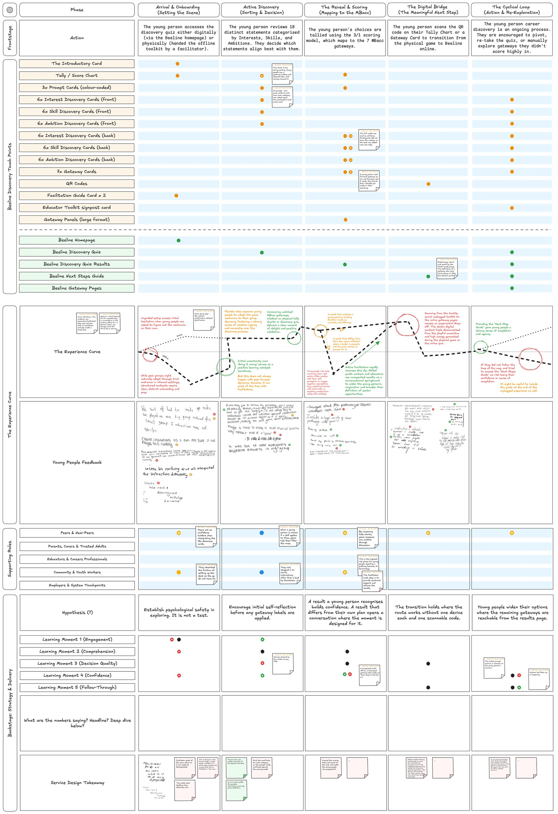

SKILL 4 OF 8 · SERVICE DESIGN AND CO-DESIGN
Service blueprints
A journey laid out phase by phase: what someone does, which touchpoint carries it, what happens behind it, and who supports them. I have drawn one in two projects, for a lab technology looking for a market and for a careers service for young people.
WHERE IT SHOWS UP
The rows, across both blueprints
| ROW | ARTIFICIAL LEAF | BEELINE |
|---|---|---|
| Phases across the top | ■ investigation, evaluation, collaboration | ■ arrival to re-exploration |
| What the person does | ■ | ■ |
| Touchpoints, either side of the line of visibility | ■ | ■ offline above, digital below |
| What happens behind it | ■ what the institute does, what each step needs | □ |
| Who supports them | ■ stakeholders | ■ supporting roles |
| How it feels | ■ experience map | ■ intended experience curve, with quotes |
| What each phase should move | □ | ■ a Learning Moment |
Beeline Discovery service blueprint
Five phases, from arrival to re-exploration. Offline touchpoints sit above the line of visibility and digital ones below it, with the intended experience curve, quotes from young people at each phase, the supporting roles, and the Learning Moment each phase is meant to move. The offline and online halves run the same discovery logic, and each phase favours a different half.

A company looking for new technologies
The service from the point of view of a company looking for new technologies, drawn from the Laurentia interview. Main stages across the top, then user actions, touchpoints and stakeholders, with an experience map underneath tracking how it feels at each step. A second version added what happens behind each step: what the institute does in response, and what each step needs. The blueprints aligned the science and business sides and shaped CO/LAB, the onboarding tool I pitched at the SUGAR Expo in San Francisco.